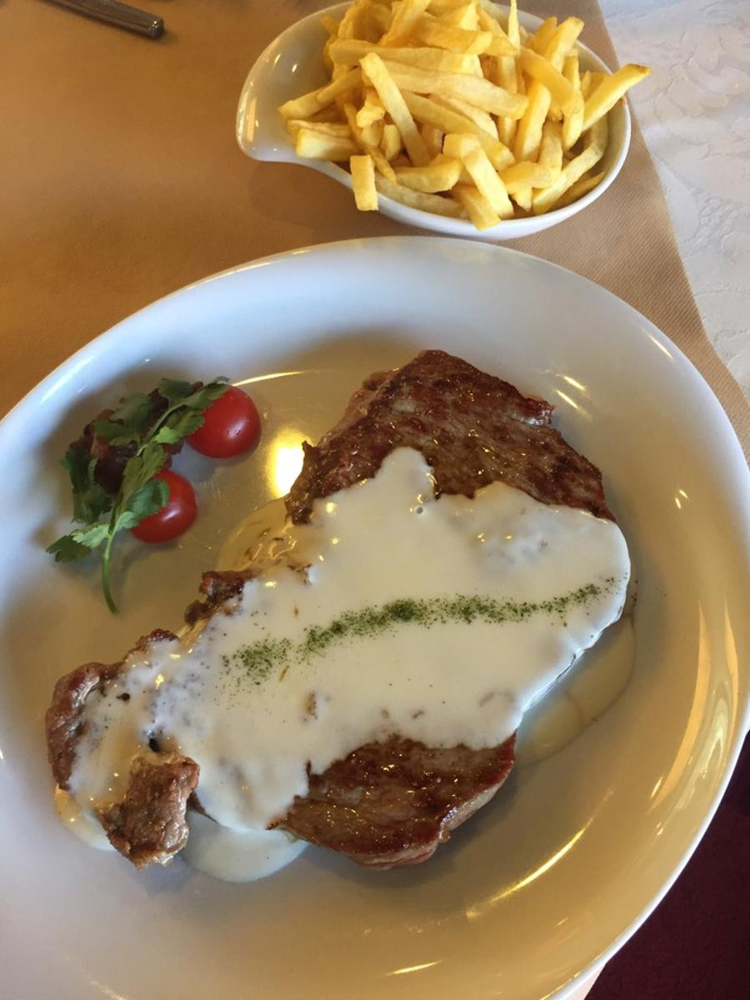

Bife catedral com queijo serra da estrela

Ingredientes
- Bife de Novilho (Lombo);
- Batata Ponte Nova;
- Brócolos;
- Cenoura;
- Courgette;
- Alho;
- Azeite;
- Queijo Serra da Estrela Amanteigado;
- Natas;
- Sal;
- Pimenta;
- Tomilho;
Modo de preparo
Bife do Lombo:
- Cortar um Bife com aprox. 200gr;
- Selar a carne numa frigideira com um pouco de Azeite, Tomilho e Alho;
- Temperar com sal grosso e pimenta e deixar cozinhar até atingir o seu “ponto” (mal/médio/bem);
- Deixar repousar a carne.
Molho Catedral:
- 100gr de queijo Serra amanteigado;
- Juntar 50ml de natas frescas;
- Misturar muito bem aquecendo o preparado em lume brando;
- Retificar o tempero e envolver muito bem a mistura;